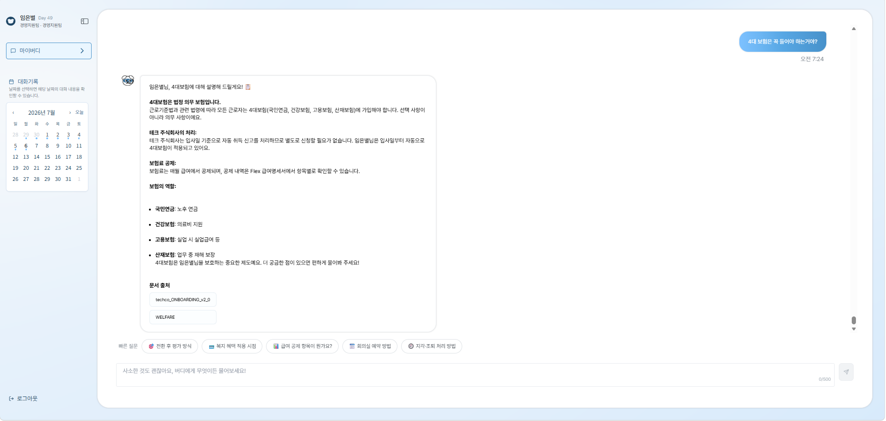

Enterprise AI Onboarding Assistant powered by LLM, RAG and Multi-Agent Architecture.
임직원이 사내 규정·복지·인사 정책을 자연어로 물어보면, 관련 문서를 검색해 근거 있는 답변을 실시간으로 제공하는 AI 어시스턴트입니다.
📌 This repository is a portfolio showcase, not the source code.
클릭하면 크게 볼 수 있어요
User Question
│
▼
[Multi-Agent Orchestrator] ← LangGraph (Intent 분류)
│
├─ RAG ──────────────► [Hybrid Search] ← BM25 + Vector (asyncio parallel)
│ │
│ [Claude Haiku] ← SSE Streaming + Prompt Caching
│ │
│ [Quality Gate] ← Self-Verifier + LLM Judge
│
├─ chitchat ──────────► 일상 대화 처리
├─ out_of_scope ──────► 범위 외 안내
└─ sensitive ─────────► 민감 질문 필터
AI 파트 전담 — 설계부터 배포까지 단독 구현
| 영역 | 내용 |
|---|---|
| RAG 파이프라인 | 문서 인덱싱, 하이브리드 검색, 답변 생성 전체 설계 및 구현 |
| Multi-Agent | LangGraph Orchestrator, Self-Verifier, LLM Judge 구현 |
| Prompt Engineering | 멀티테넌트 시스템 프롬프트, Prompt Caching, 답변 품질 규칙 설계 |
| Async API | FastAPI SSE 스트리밍 엔드포인트, 선행 버퍼 로직 |
| 평가 시스템 | RAGAS 자동 평가, LangSmith 트레이싱, E2E 회귀 테스트 설계 |
| 미답변 관리 | 감지 → 저장 → 군집화 → Slack 알림 → 관리자 루프 전체 |
| 문서 인덱싱 | content_hash 변경 감지 기반 자동 재인덱싱, 버전 관리 |
| Category | Technology |
|---|---|
| Language | Python 3.11 |
| LLM | Claude Haiku (Anthropic) |
| Embedding | Google Gemini Embedding 2 · 3072d |
| RAG Framework | LangChain, LangGraph |
| Vector DB | ChromaDB |
| Keyword Search | BM25 + kiwipiepy (Korean NLP) |
| API Server | FastAPI + asyncio |
| Caching | Anthropic Prompt Caching · Redis |
| Evaluation | RAGAS · E2E Python |
| Monitoring | LangSmith |
| Notification | Slack SDK |
| 지표 | 결과 |
|---|---|
| E2E 정답률 | 97.5% (39/40, 통합 테스트셋) |
| BM25 도입 효과 | 82.5% → 87.5% (+5%p) |
| TTFT | 평균 0.7초 |
| LLM 호출 최적화 | Intent + Clarifying 통합으로 2 → 1회 |
| 지원 기업 수 | 멀티테넌트 구조로 복수 기업 동시 운영 |
초기에는 프롬프트 튜닝에 집중했지만, 정답률 병목은 항상 검색 품질이었습니다. BM25 하이브리드 도입 후 키워드 매칭이 약한 케이스가 크게 줄었고, 한국어 형태소 분석이 BM25 성능에 직접적인 영향을 준다는 걸 체감했습니다.
"~하세요" 식 지시보다 "~는 절대 금지입니다 + 올바른 형태 예시 제시"가 훨씬 효과적이었습니다. LLM은 금지 규칙만 있으면 비슷한 패턴을 변형해서 우회하지만, 정답 형태를 명시하면 수렴합니다.
동일 질문이 어떤 날은 정답, 어떤 날은 no_result로 분류되는 문제를 겪었습니다. 원인은 LLM 온도와 누적된 conversationHistory였고, temperature=0 고정과 히스토리 10턴 제한으로 안정화했습니다.
SSE 스트리밍은 이미 나간 토큰을 회수할 수 없어서, 고위험 질문의 품질 검증과 정면으로 충돌했습니다. 스트리밍 억제 → 전체 누적 → LLM Judge → 단일 전송 방식으로 해결했지만, UX와 안전성의 트레이드오프를 직접 설계하는 경험이었습니다.